Program
Mötesreferat
Bli medlem
Historik
Stadgar
Samla mynt
Jubileumsbok
Jubileumsbok 2009
Jubileumsbok 2019
Småskrifter
Auktionskatalog
Länkar
Kontakt
Curt Ekström
Lördagen den 27 april 2002 anordnades Myntdag i Uppsala på Museum Gustavianum. Myntdagen arrangerades i samarbete med Uppsala universitets myntkabinett och Numismatiska klubben i Uppsala. Ett stort antal besökare kom till Museum Gustavianum, lockade av det stora och varierande utbudet med anknytning till myntsamlande.
En populär programpunkt var expertbedömningen av besökarnas medförda mynt, medaljer, polletter och sedlar. Köerna var stundtals långa vid denna myntens "antikrunda". En del kom med välfyllda plastpåsar, andra med enstaka mynt i en liten ask och några med förhoppningen att de hade en raritet i byrålådan.
Numismatiska klubben i Uppsala presenterade en mindre utställning med bl.a. mynt från Olof Skötkonungs tid, numismatisk litteratur, medaljer, polletter, samt plåtmynt från ostindienfararen Nicobar, som förliste utanför Sydafrikas kust 1782.
Uppsala universitets myntkabinett har en omfattande myntsamling, ur vilken en del av den antika samlingen är utställd på Museum Gustavianum. Myntkabinettets föreståndare Harald Nilsson presenterade utställningen med de antika grekiska och romerska mynten, vilka ger prov på en enastående konstnärlighet.
Ett antal korta föredrag gavs med anknytning till mynt:| Harald Nilsson | Uppsala universitets myntkabinett |
| Anders Frösell | Uppsala som myntort |
| Sven-Erik Olsson | Upplandspolletter |
| Frédéric Elfver | Mynt - historia i fickformat |
| Curt Ekström | Att samla mynt - Numismatiska klubben i Uppsala |
Sammanfattningsvis var denna första Myntdag i Uppsala en stor succé, besöksantalet var stort och ett flertal nya medlemmar värvades till Numismatiska klubben. Mynt har så mycket att berätta och det finns så många aspekter på myntsamlande - myntdagen fyller ett berättigat behov. Vi räknar med att återkomma med Myntdag i Uppsala under kommande år.
Bilder:
Klicka för större versioner
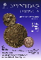
{kind=link}
Myntdagens affisch
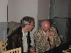
{kind=link}
Lars-Erik Rundquist bedömer ett mynt åt en besökare.
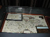
{kind=link}
NKU:s utställning - myntfynd från förlista fartyg.
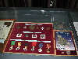
{kind=link}
NKU:s utställning - medaljer och ordnar.
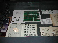
{kind=link}
NKU:s utställning - numismatisk litteratur samt mynt och polletter.
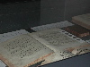
{kind=link}
NKU:s utställning - numismatisk litteratur och äldre svenska mynt.
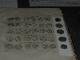
{kind=link}
NKU:s utställning - numismatisk litteratur och äldre svenska mynt.
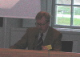
{kind=link}
Myntkabinettets föreståndare och NKU:s tredje ordförande Harald Nilsson berättar om Uppsala universitets myntkabinett.
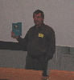
{kind=link}
NKU:s vice ordförande Anders Frösell talar om Uppsala som myntort.
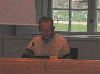
{kind=link}
NKU:s kassaförvaltare Sven-Erik Olsson berättar om sitt specialintresse upplandspolletter.
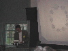
{kind=link}
Frédéric Elfver, Stockholm, talar om mynt - historia i fickformat.
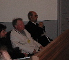
{kind=link}
NKU:s förste ordförande Bertel Tingström (till höger) och andre ordförande Lars-Erik Ahlsson lyssnar på de korta föredragen.
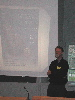
{kind=link}
NKU:s nuvarande ordförande Curt Ekström sammanfattar Myntdag i Uppsala.